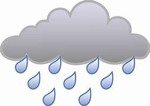
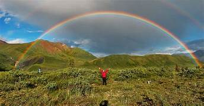
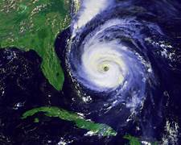
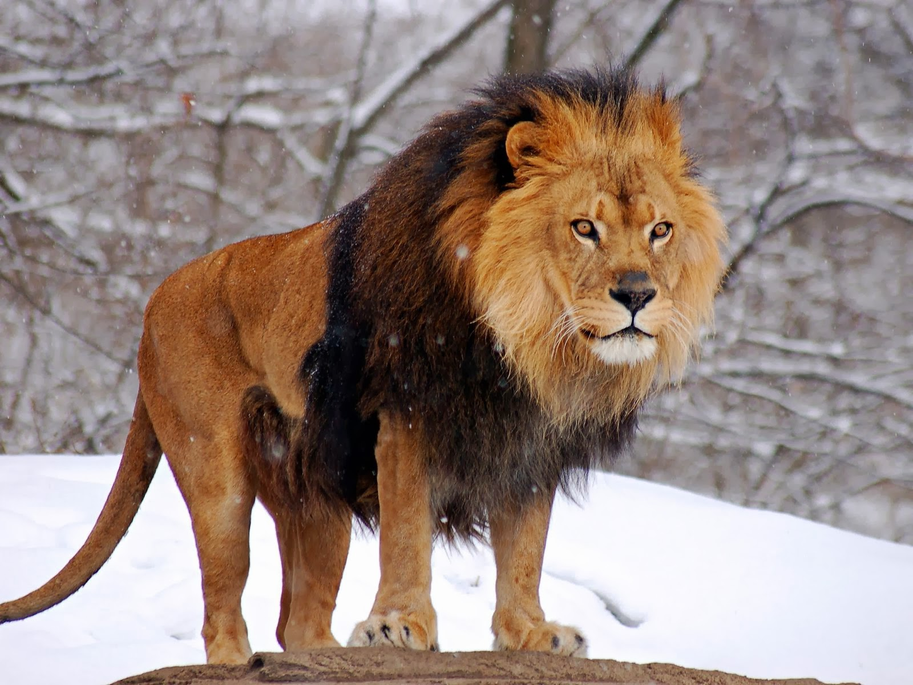

Chapter-1
Chapter-2
Chapter-3
Chapter-4
Chapter-1
Badal Barish

Rain is a kind of precipitation. Precipitation is any kind of water that falls from clouds in the sky, like rain, hail, sleet and snow. It is measured by a rain gauge. Rain is part of the water cycle.
Clouds will often absorb smoke to create rain, commonly referred to as "nature's laundry" due to this process.
Some places have frequent rain. This makes rainforests. Some have little rain. This makes deserts.
A rainstorm is a sudden heavy fall of rain. It may cause flash floods in valleys. Heavy rain for a long time may make floods that destroy houses and drown people. Also, landslides may happen.
Convectional rain
When the Sun heats the Earth's surface, the ground heats the air above it. Convection makes the air rise and cool. When it cools to the dew point, clouds form and rain follows.This usually occurs on flat land. This type of rainfall often causes summer showers and thunderstorms.
Relief rain usually occurs along coastal areas where a line of hills runs along the coast. When wet onshore wind from the sea meets a mountain, hill or any other sort of barrier, it is forced to rise along the slope and cools. When the air temperature falls to its dew point, water vapour condenses to form clouds. When the clouds can no longer hold the water droplets, relief rain begins to fall on the windward slope of the mountain. On the leeward slope, air sinks, it is warmed and further dried by compression. Therefore, the leeward slope is known as rain shadow. Moist winds blow in from the sea and are forced to rise over the land. The air cools and the water vapour condenses, forming rain drops. The rainiest places in the world are places that have relief rainfall.
Frontal rain/Cyclonic rain
Diagram of a cold front causing rain
Frontal rain happens when cooler air and warmer, humid air meet in a weather front. The less dense warm air rises and condenses forming clouds. These clouds grow and eventually create rain. In some places on the northern temperate zone the cold air front tends to come from the north west and the warm air front comes from the south west.
Collection
Some people collect rain in a rainwater tank. People use rainwater for watering plants, cleaning the house, bathing, or drinking. It is not always safe to drink rainwater.[1] It can have bacteria, parasites, viruses, and chemicals that could make people sick.
Chapter-2
Rainbow

A rainbow is an optical phenomenon that can occur under certain meteorological conditions. It is caused by refraction, internal reflection and dispersion of light in water droplets resulting in a continuous spectrum of light appearing in the sky.[1] The rainbow takes the form of a multicoloured circular arc.[2] Rainbows caused by sunlight always appear in the section of sky directly opposite the Sun.
Rainbows can be full circles. However, the observer normally sees only an arc formed by illuminated droplets above the ground,[3] and centered on a line from the Sun to the observer's eye.
In a primary rainbow, the arc shows red on the outer part and violet on the inner side. This rainbow is caused by light being refracted when entering a droplet of water, then reflected inside on the back of the droplet and refracted again when leaving it.
In a double rainbow, a second arc is seen outside the primary arc, and has the order of its colours reversed, with red on the inner side of the arc. This is caused by the light being reflected twice on the inside of the droplet before leaving it.
A rainbow is not located at a specific distance from the observer, but comes from an optical illusion caused by any water droplets viewed from a certain angle relative to a light source. Thus, a rainbow is not an object and cannot be physically approached. Indeed, it is impossible for an observer to see a rainbow from water droplets at any angle other than the customary one of 42 degrees from the direction opposite the light source. Even if an observer sees another observer who seems "under" or "at the end of" a rainbow, the second observer may see a different rainbow—farther off—at the same angle as seen by the first observer, or even none at all.
Rainbows span a continuous spectrum of colours. Any distinct bands perceived are an artefact of human colour vision, and no banding of any type is seen in a black-and-white photo of a rainbow, only a smooth gradation of intensity to a maximum, then fading towards the other side. For colours seen by the human eye, the most commonly cited and remembered sequence is Isaac Newton's sevenfold red, orange, yellow, green, blue, indigo and violet,[4][a] remembered by the mnemonic Richard Of York Gave Battle In Vain, or as the name of a fictional person (Roy G. Biv). The initialism is sometimes referred to in reverse order, as VIBGYOR. More modernly, the rainbow is often divided into red, orange, yellow, green, cyan, blue and violet.[6]
Rainbows can be caused by many forms of airborne water. These include not only rain, but also mist, spray, and airborne dew.
Rainbows can be observed whenever there are water drops in the air and sunlight shining from behind the observer at a low altitude angle. Because of this, rainbows are usually seen in the western sky during the morning and in the eastern sky during the early evening. The most spectacular rainbow displays happen when half the sky is still dark with raining clouds and the observer is at a spot with clear sky in the direction of the Sun. The result is a luminous rainbow that contrasts with the darkened background. During such good visibility conditions, the larger but fainter secondary rainbow is often visible. It appears about 10° outside of the primary rainbow, with inverse order of colours.
Eruption of Castle Geyser, Yellowstone National Park, with double rainbow seen in the mist
The rainbow effect is also commonly seen near waterfalls or fountains. In addition, the effect can be artificially created by dispersing water droplets into the air during a sunny day. Rarely, a moonbow, lunar rainbow or nighttime rainbow, can be seen on strongly moonlit nights. As human visual perception for colour is poor in low light, moonbows are often perceived to be white.[7]
It is difficult to photograph the complete semicircle of a rainbow in one frame, as this would require an angle of view of 84°. For a 35 mm camera, a wide-angle lens with a focal length of 19 mm or less would be required. Now that software for stitching several images into a panorama is available, images of the entire arc and even secondary arcs can be created fairly easily from a series of overlapping frames.
From above the Earth such as in an aeroplane, it is sometimes possible to see a rainbow as a full circle. This phenomenon can be confused with the glory phenomenon, but a glory is usually much smaller, covering only 5–20°.
The sky inside a primary rainbow is brighter than the sky outside of the bow. This is because each raindrop is a sphere and it scatters light over an entire circular disc in the sky. The radius of the disc depends on the wavelength of light, with red light being scattered over a larger angle than blue light. Over most of the disc, scattered light at all wavelengths overlaps, resulting in white light which brightens the sky. At the edge, the wavelength dependence of the scattering gives rise to the rainbow.[8]
The light of a primary rainbow arc is 96% polarised tangential to the arc.[9] The light of the second arc is 90% polarised.
Chapter-3
Cyclones

In meteorology, a cyclone (/ˈsaɪ.kloʊn/) is a large air mass that rotates around a strong center of low atmospheric pressure, counterclockwise in the Northern Hemisphere and clockwise in the Southern Hemisphere as viewed from above (opposite to an anticyclone).[1][2] Cyclones are characterized by inward-spiraling winds that rotate about a zone of low pressure.[3][4] The largest low-pressure systems are polar vortices and extratropical cyclones of the largest scale (the synoptic scale). Warm-core cyclones such as tropical cyclones and subtropical cyclones also lie within the synoptic scale.[5] Mesocyclones, tornadoes, and dust devils lie within the smaller mesoscale.[6] Upper level cyclones can exist without the presence of a surface low, and can pinch off from the base of the tropical upper tropospheric trough during the summer months in the Northern Hemisphere. Cyclones have also been seen on extraterrestrial planets, such as Mars, Jupiter, and Neptune.[7][8] Cyclogenesis is the process of cyclone formation and intensification.[9] Extratropical cyclones begin as waves in large regions of enhanced mid-latitude temperature contrasts called baroclinic zones. These zones contract and form weather fronts as the cyclonic circulation closes and intensifies. Later in their life cycle, extratropical cyclones occlude as cold air masses undercut the warmer air and become cold core systems. A cyclone's track is guided over the course of its 2 to 6 day life cycle by the steering flow of the subtropical jet stream.
Weather fronts mark the boundary between two masses of air of different temperature, humidity, and densities, and are associated with the most prominent meteorological phenomena. Strong cold fronts typically feature narrow bands of thunderstorms and severe weather, and may on occasion be preceded by squall lines or dry lines. Such fronts form west of the circulation center and generally move from west to east; warm fronts form east of the cyclone center and are usually preceded by stratiform precipitation and fog. Warm fronts move poleward ahead of the cyclone path. Occluded fronts form late in the cyclone life cycle near the center of the cyclone and often wrap around the storm center.
Tropical cyclogenesis describes the process of development of tropical cyclones. Tropical cyclones form due to latent heat driven by significant thunderstorm activity, and are warm core.[10][11] Cyclones can transition between extratropical, subtropical, and tropical phases.[12] Mesocyclones form as warm core cyclones over land, and can lead to tornado formation.[13] Waterspouts can also form from mesocyclones, but more often develop from environments of high instability and low vertical wind shear.[14] In the Atlantic and the northeastern Pacific oceans, a tropical cyclone is generally referred to as a hurricane (from the name of the ancient Central American deity of wind, Huracan), in the Indian and south Pacific oceans it is called a cyclone, and in the northwestern Pacific it is called a typhoon.[15] The growth of instability in the vortices is not universal. For example, the size, intensity, moist-convection, surface evaporation, the value of potential temperature at each potential height can affect the nonlinear evolution of a vortex.
There are a number of structural characteristics common to all cyclones. A cyclone is a low-pressure area.[19] A cyclone's center (often known in a mature tropical cyclone as the eye), is the area of lowest atmospheric pressure in the region.[19] Near the center, the pressure gradient force (from the pressure in the center of the cyclone compared to the pressure outside the cyclone) and the force from the Coriolis effect must be in an approximate balance, or the cyclone would collapse on itself as a result of the difference in pressure.[20]
Because of the Coriolis effect, the wind flow around a large cyclone is counterclockwise in the Northern Hemisphere and clockwise in the Southern Hemisphere.[21] In the Northern Hemisphere, the fastest winds relative to the surface of the Earth therefore occur on the eastern side of a northward-moving cyclone and on the northern side of a westward-moving one; the opposite occurs in the Southern Hemisphere.[22] In contrast to low-pressure systems, the wind flow around high-pressure systems are clockwise (anticyclonic) in the northern hemisphere, and counterclockwise in the southern hemisphere.
Chapter-4
Lion

The lion (Panthera leo) is a large cat of the genus Panthera native to Africa and India. It has a muscular, broad-chested body; short, rounded head; round ears; and a hairy tuft at the end of its tail. It is sexually dimorphic; adult male lions are larger than females and have a prominent mane. It is a social species, forming groups called prides. A lion's pride consists of a few adult males, related females, and cubs. Groups of female lions usually hunt together, preying mostly on large ungulates. The lion is an apex and keystone predator; although some lions scavenge when opportunities occur and have been known to hunt humans, lions typically do not actively seek out and prey on humans.
The lion inhabits grasslands, savannahs and shrublands. It is usually more diurnal than other wild cats, but when persecuted, it adapts to being active at night and at twilight. During the Neolithic period, the lion ranged throughout Africa and Eurasia from Southeast Europe to India, but it has been reduced to fragmented populations in sub-Saharan Africa and one population in western India. It has been listed as Vulnerable on the IUCN Red List since 1996 because populations in African countries have declined by about 43% since the early 1990s. Lion populations are untenable outside designated protected areas. Although the cause of the decline is not fully understood, habitat loss and conflicts with humans are the greatest causes for concern.
One of the most widely recognised animal symbols in human culture, the lion has been extensively depicted in sculptures and paintings, on national flags, and in contemporary films and literature. Lions have been kept in menageries since the time of the Roman Empire and have been a key species sought for exhibition in zoological gardens across the world since the late 18th century. Cultural depictions of lions were prominent in Ancient Egypt, and depictions have occurred in virtually all ancient and medieval cultures in the lion's historic and current range.
However, there seems to be some degree of overlap between both groups in northern Central Africa. DNA analysis from a more recent study indicates, that Central African lions are derived from both northern and southern lions, as they cluster with P. leo leo in mtDNA-based phylogenies whereas their genomic DNA indicates a closer relationship with P. leo melanochaita.[17]
Lion samples from some parts of the Ethiopian Highlands cluster genetically with those from Cameroon and Chad, while lions from other areas of Ethiopia cluster with samples from East Africa. Researchers, therefore, assume Ethiopia is a contact zone between the two subspecies.[18] Genome-wide data of a wild-born historical lion sample from Sudan showed that it clustered with P. l. leo in mtDNA-based phylogenies, but with a high affinity to P. l. melanochaita. This result suggested that the taxonomic position of lions in Central Africa may require revision.